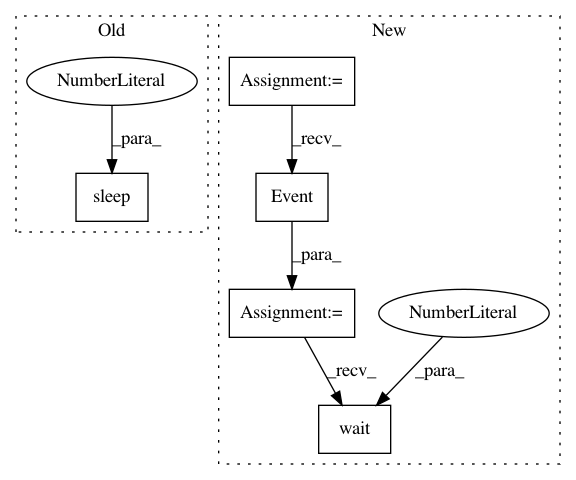

f36ab9556e634dc7d62253e239d7817c6e0eba32,firestore/cloud-client/snippets.py,,listen_multiple,#,690
Before Change
u"population": 860000
}
db.collection(u"cities").document(u"SF").set(data)
sleep(1)
query_watch.unsubscribe()
After Change
// [START listen_multiple]
// Create an Event for notifying main thread.
callback_done = threading.Event()
// Create a callback on_snapshot function to capture changes
def on_snapshot(col_snapshot, changes, read_time):
print(u"Callback received query snapshot.")
print(u"Current cities in California:")
for doc in col_snapshot:
print(u"{}".format(doc.id))
callback_done.set()
col_query = db.collection(u"cities").where(u"state", u"==", u"CA")
// Watch the collection query
query_watch = col_query.on_snapshot(on_snapshot)
// [END listen_multiple]
// Creating document
data = {
u"name": u"San Francisco",
u"state": u"CA",
u"country": u"USA",
u"capital": False,
u"population": 860000
}
db.collection(u"cities").document(u"SF").set(data)
// Wait for the callback.
callback_done.wait(timeout=60)
query_watch.unsubscribe()
def listen_for_changes():
In pattern: SUPERPATTERN
Frequency: 3
Non-data size: 5
Instances
Project Name: GoogleCloudPlatform/python-docs-samples
Commit Name: f36ab9556e634dc7d62253e239d7817c6e0eba32
Time: 2020-04-21
Author: tmatsuo@google.com
File Name: firestore/cloud-client/snippets.py
Class Name:
Method Name: listen_multiple
Project Name: GoogleCloudPlatform/python-docs-samples
Commit Name: f36ab9556e634dc7d62253e239d7817c6e0eba32
Time: 2020-04-21
Author: tmatsuo@google.com
File Name: firestore/cloud-client/snippets.py
Class Name:
Method Name: listen_for_changes
Project Name: GoogleCloudPlatform/python-docs-samples
Commit Name: f36ab9556e634dc7d62253e239d7817c6e0eba32
Time: 2020-04-21
Author: tmatsuo@google.com
File Name: firestore/cloud-client/snippets.py
Class Name:
Method Name: listen_document